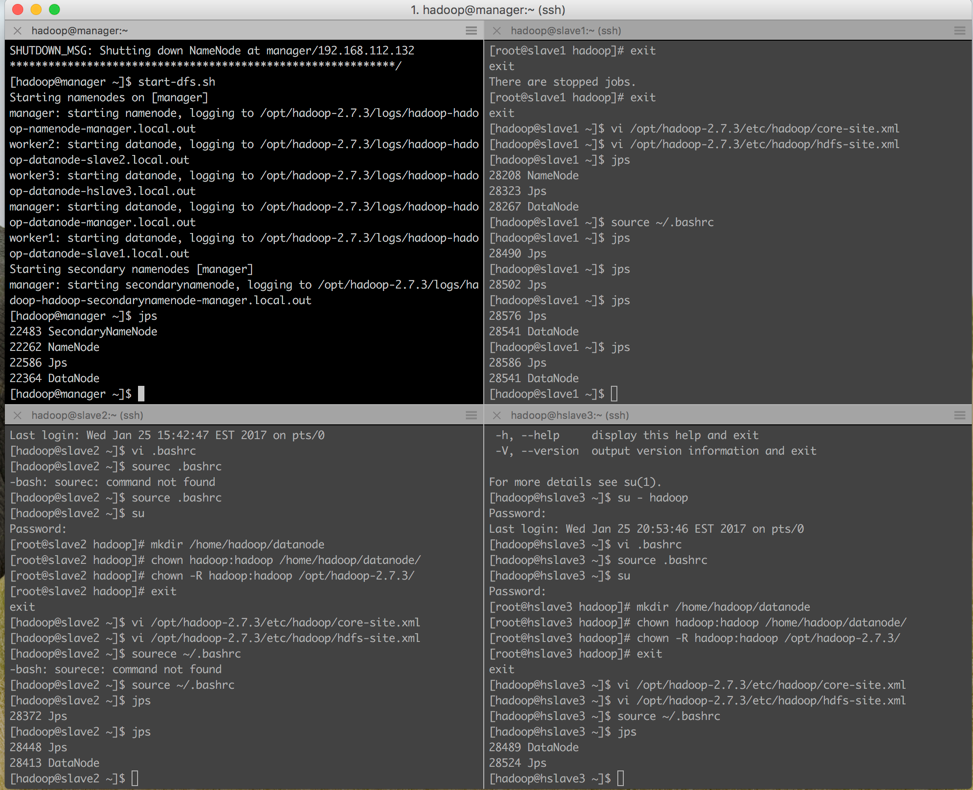
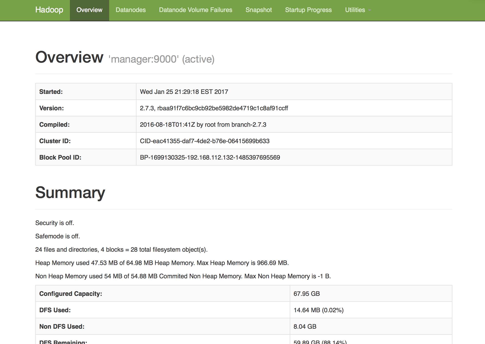
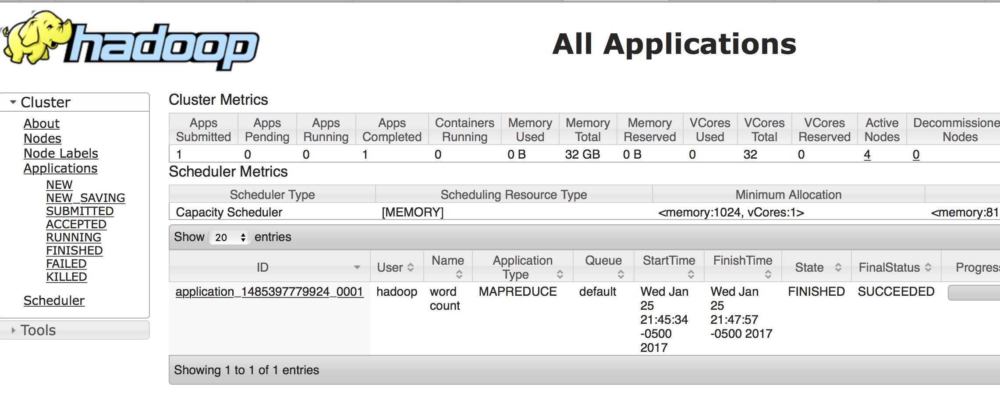

<!DOCTYPE html PUBLIC "-//W3C//DTD XHTML 1.0 Transitional//EN"
  "http://www.w3.org/TR/xhtml1/DTD/xhtml1-transitional.dtd">


<html xmlns="http://www.w3.org/1999/xhtml">
  <head>
    <meta http-equiv="Content-Type" content="text/html; charset=utf-8" />
    
    <title>Homework 2: Installing Hadoop on a Cluster &#8212; Data Science 1 documentation</title>
    
    <link rel="stylesheet" href="../_static/alabaster.css" type="text/css" />
    <link rel="stylesheet" href="../_static/pygments.css" type="text/css" />
    
    <script type="text/javascript">
      var DOCUMENTATION_OPTIONS = {
        URL_ROOT:    '../',
        VERSION:     '1',
        COLLAPSE_INDEX: false,
        FILE_SUFFIX: '.html',
        HAS_SOURCE:  true,
        SOURCELINK_SUFFIX: '.txt'
      };
    </script>
    <script type="text/javascript" src="../_static/jquery.js"></script>
    <script type="text/javascript" src="../_static/underscore.js"></script>
    <script type="text/javascript" src="../_static/doctools.js"></script>
    <script type="text/javascript" src="https://cdn.mathjax.org/mathjax/latest/MathJax.js?config=TeX-AMS-MML_HTMLorMML"></script>
    <link rel="index" title="Index" href="../genindex.html" />
    <link rel="search" title="Search" href="../search.html" />
    <link rel="next" title="Week 3 Hbase" href="week3hbase.html" />
    <link rel="prev" title="Homework 1: Installing Hadoop on a single machine" href="week1hadoop.html" />
   
  <link rel="stylesheet" href="../_static/custom.css" type="text/css" />
  
  
  <meta name="viewport" content="width=device-width, initial-scale=0.9, maximum-scale=0.9" />

  </head>
  <body role="document">
  

    <div class="document">
      <div class="documentwrapper">
        <div class="bodywrapper">
          <div class="body" role="main">
            
  <div class="section" id="homework-2-installing-hadoop-on-a-cluster">
<h1>Homework 2: Installing Hadoop on a Cluster<a class="headerlink" href="#homework-2-installing-hadoop-on-a-cluster" title="Permalink to this headline">¶</a></h1>
<p>by Joshua Peterson (created in Sphinx)</p>
<div class="section" id="indices-and-tables">
<h2>Indices and tables<a class="headerlink" href="#indices-and-tables" title="Permalink to this headline">¶</a></h2>
<ul class="simple">
<li><a class="reference internal" href="../genindex.html"><span class="std std-ref">Index</span></a></li>
<li><a class="reference internal" href="../search.html"><span class="std std-ref">Search Page</span></a></li>
</ul>
</div>
<div class="section" id="installing-hadoop-on-a-cluster">
<h2>Installing Hadoop on a Cluster<a class="headerlink" href="#installing-hadoop-on-a-cluster" title="Permalink to this headline">¶</a></h2>
<p>The goal of this weeks homework is to install hadoop on a cluster of one master and three slaves.  This is accomplished by installing four different CentOS minimal virtual machines on VMware Fusion.  Each virtual machine had a 1 GB memory assigned to it and the other default settings were used.</p>
<div class="admonition note">
<p class="first admonition-title">Note</p>
<p class="last">Make sure you turn on the NAT networking for the four machines.  The first installation I did without NAT on and I had to ready the installation of the virtual machine</p>
</div>
<p>Once all four virtual machines were running I type the following command to determine their ip address:</p>
<div class="highlight-default"><div class="highlight"><pre><span></span><span class="n">ip</span> <span class="n">addr</span>
</pre></div>
</div>
<p>The ip address for the four machines were the following:</p>
<div class="highlight-default"><div class="highlight"><pre><span></span><span class="n">Manager</span> <span class="n">Address</span><span class="p">:</span>  <span class="mf">192.168</span><span class="o">.</span><span class="mf">112.132</span> <span class="p">(</span><span class="n">manager</span><span class="o">.</span><span class="n">local</span><span class="p">)</span>
<span class="n">Worker</span> <span class="mi">1</span> <span class="n">IP</span> <span class="n">Address</span><span class="p">:</span>  <span class="mf">192.168</span><span class="o">.</span><span class="mf">112.129</span> <span class="p">(</span><span class="n">slave1</span><span class="o">.</span><span class="n">local</span><span class="p">)</span>
<span class="n">Worker</span> <span class="mi">2</span> <span class="n">IP</span> <span class="n">Address</span><span class="p">:</span>  <span class="mf">192.168</span><span class="o">.</span><span class="mf">112.130</span> <span class="p">(</span><span class="n">slave2</span><span class="o">.</span><span class="n">local</span><span class="p">)</span>
<span class="n">Worker</span> <span class="mi">3</span> <span class="n">IP</span> <span class="n">Address</span><span class="p">:</span>  <span class="mf">192.168</span><span class="o">.</span><span class="mf">112.131</span> <span class="p">(</span><span class="n">slave3</span><span class="o">.</span><span class="n">local</span><span class="p">)</span>
</pre></div>
</div>
<p>I then used <strong>item2</strong> to ssh into all four nodes.  The way I set up my iterm2 window was the following where the top left was manager followed by the three slaves.</p>

<p>Then on each node I updated them using the following commands:</p>
<div class="highlight-default"><div class="highlight"><pre><span></span><span class="n">su</span>
<span class="n">yum</span> <span class="n">update</span>
<span class="n">yum</span> <span class="n">provides</span> <span class="n">wget</span>
<span class="n">yum</span> <span class="n">install</span> <span class="n">wget</span>
</pre></div>
</div>
<p>I then changed the name of machines to make it easier to know which machine was associated with each desired process.  This was accomplished by the following command:</p>
<div class="highlight-default"><div class="highlight"><pre><span></span><span class="n">nmtui</span>
</pre></div>
</div>
<dl class="docutils">
<dt>The name of the machines were the following</dt>
<dd><ul class="first last simple">
<li>manger.local</li>
<li>slave1.local</li>
<li>slave2.local</li>
<li>hslave3.local</li>
</ul>
</dd>
</dl>
<div class="admonition note">
<p class="first admonition-title">Note</p>
<p class="last">On machine was named hslave and the other to just slave.  In the future I would recommend naming all of them hslave to represent haddop slave.</p>
</div>
<p>I then disabled the firewall using the command:</p>
<div class="highlight-default"><div class="highlight"><pre><span></span><span class="n">systemctl</span> <span class="n">stop</span> <span class="n">firewalld</span>
</pre></div>
</div>
<p>I then disabled the IPV6 by adding these lines to <strong>/etc/sysctl.comf</strong>:</p>
<div class="highlight-default"><div class="highlight"><pre><span></span><span class="n">net</span><span class="o">.</span><span class="n">ipv6</span><span class="o">.</span><span class="n">conf</span><span class="o">.</span><span class="n">all</span><span class="o">.</span><span class="n">disable_ipv6</span> <span class="o">=</span> <span class="mi">1</span>
<span class="n">net</span><span class="o">.</span><span class="n">ipv6</span><span class="o">.</span><span class="n">conf</span><span class="o">.</span><span class="n">default</span><span class="o">.</span><span class="n">disable_ipv6</span> <span class="o">=</span> <span class="mi">1</span>
</pre></div>
</div>
<div class="admonition note">
<p class="first admonition-title">Note</p>
<p class="last">the disabling of the firewall will not survive a reboot and will need to be done every time the machine is rebooted</p>
</div>
<div class="section" id="on-each-of-the-nodes-i-did-the-following">
<h3>On <strong>each</strong> of the nodes I did the following::<a class="headerlink" href="#on-each-of-the-nodes-i-did-the-following" title="Permalink to this headline">¶</a></h3>
<blockquote>
<div>su
vi /etc/hosts</div></blockquote>
<p>I then added the following lines to /etc/host:</p>
<div class="highlight-default"><div class="highlight"><pre><span></span><span class="mf">192.168</span><span class="o">.</span><span class="mf">112.132</span>  <span class="n">manager</span>
<span class="mf">192.168</span><span class="o">.</span><span class="mf">112.129</span> <span class="n">worker1</span>
<span class="mf">192.168</span><span class="o">.</span><span class="mf">112.130</span> <span class="n">worker2</span>
<span class="mf">192.168</span><span class="o">.</span><span class="mf">112.131</span> <span class="n">worker3</span>
</pre></div>
</div>
<p>I then created hadoop user (on each of the node):</p>
<div class="highlight-default"><div class="highlight"><pre><span></span><span class="n">useradd</span> <span class="n">hadoop</span>
<span class="n">passwd</span> <span class="n">haddop</span>
</pre></div>
</div>
<p>Then I exited as root and login into hadoop using:</p>
<div class="highlight-default"><div class="highlight"><pre><span></span><span class="n">su</span> <span class="o">**-**</span> <span class="n">hadoop</span>
<span class="n">ssh</span><span class="o">-</span><span class="n">keygen</span> <span class="o">-</span><span class="n">t</span> <span class="n">rsa</span>
<span class="n">ssh</span><span class="o">-</span><span class="n">copy</span><span class="o">-</span><span class="nb">id</span> <span class="o">-</span><span class="n">i</span> <span class="o">~/.</span><span class="n">ssh</span><span class="o">/</span><span class="n">id_rsa</span><span class="o">.</span><span class="n">pub</span> <span class="n">hadoop</span><span class="nd">@manager</span>
<span class="n">ssh</span><span class="o">-</span><span class="n">copy</span><span class="o">-</span><span class="nb">id</span> <span class="o">-</span><span class="n">i</span> <span class="o">~/.</span><span class="n">ssh</span><span class="o">/</span><span class="n">id_rsa</span><span class="o">.</span><span class="n">pub</span> <span class="n">hadoop</span><span class="nd">@worker1</span>
<span class="n">ssh</span><span class="o">-</span><span class="n">copy</span><span class="o">-</span><span class="nb">id</span> <span class="o">-</span><span class="n">i</span> <span class="o">~/.</span><span class="n">ssh</span><span class="o">/</span><span class="n">id_rsa</span><span class="o">.</span><span class="n">pub</span> <span class="n">hadoop</span><span class="nd">@worker2</span>
<span class="n">ssh</span><span class="o">-</span><span class="n">copy</span><span class="o">-</span><span class="nb">id</span> <span class="o">-</span><span class="n">i</span> <span class="o">~/.</span><span class="n">ssh</span><span class="o">/</span><span class="n">id_rsa</span><span class="o">.</span><span class="n">pub</span> <span class="n">hadoop</span><span class="nd">@worker3</span>
<span class="n">chmod</span> <span class="mi">0600</span> <span class="o">~/.</span><span class="n">ssh</span><span class="o">/</span><span class="n">authorized_keys</span>
</pre></div>
</div>
</div>
<div class="section" id="installing-java">
<h3>Installing java<a class="headerlink" href="#installing-java" title="Permalink to this headline">¶</a></h3>
<p>The next step is to install java on each of the machines.  On just the manger node I did the following:</p>
<div class="highlight-default"><div class="highlight"><pre><span></span>su
cd /opt
wget --no-cookies --no-check-certificate --header &quot;Cookie: gpw_e24=http%3A%2F%2Fwww.oracle.com%2F; oraclelicense=accept-securebackup-cookie&quot; http://download.oracle.com/otn-pub/java/jdk/8u111-b14/jdk-8u111-linux-x64.tar.gz
tar xzf jdk-8u111-linux-x64.tar.gz
chown R root:root jdk1.8.0_111
</pre></div>
</div>
<p>Instead of downloading java on all of the of the other nodes. I then just <em>scp</em> the folder to the other nodes stored on the /opt location:</p>
<div class="highlight-default"><div class="highlight"><pre><span></span>scp r jdk1.8.0_111 worker1:/opt
scp r jdk1.8.0_111 worker2:/opt
scp r jdk1.8.0_111 worker3:/opt
</pre></div>
</div>
<p>Now on all four nodes use <em>alternative</em> to setup Java using the following commands:</p>
<div class="highlight-default"><div class="highlight"><pre><span></span><span class="n">alternatives</span> <span class="o">--</span><span class="n">install</span> <span class="o">/</span><span class="n">usr</span><span class="o">/</span><span class="nb">bin</span><span class="o">/</span><span class="n">java</span> <span class="n">java</span> <span class="o">/</span><span class="n">opt</span><span class="o">/</span><span class="n">jdk1</span><span class="o">.</span><span class="mf">8.0</span><span class="n">_111</span><span class="o">/</span><span class="nb">bin</span><span class="o">/</span><span class="n">java</span> <span class="mi">2</span>
<span class="n">alternatives</span> <span class="o">--</span><span class="n">config</span> <span class="n">java</span>
<span class="n">alternatives</span> <span class="o">--</span><span class="n">install</span> <span class="o">/</span><span class="n">usr</span><span class="o">/</span><span class="nb">bin</span><span class="o">/</span><span class="n">jar</span> <span class="n">jar</span> <span class="o">/</span><span class="n">opt</span><span class="o">/</span><span class="n">jdk1</span><span class="o">.</span><span class="mf">8.0</span><span class="n">_111</span><span class="o">/</span><span class="nb">bin</span><span class="o">/</span><span class="n">jar</span> <span class="mi">2</span>
<span class="n">alternatives</span> <span class="o">--</span><span class="n">install</span> <span class="o">/</span><span class="n">usr</span><span class="o">/</span><span class="nb">bin</span><span class="o">/</span><span class="n">javac</span> <span class="n">javac</span> <span class="o">/</span><span class="n">opt</span><span class="o">/</span><span class="n">jdk1</span><span class="o">.</span><span class="mf">8.0</span><span class="n">_111</span><span class="o">/</span><span class="nb">bin</span><span class="o">/</span><span class="n">javac</span> <span class="mi">2</span>
<span class="n">alternatives</span> <span class="o">--</span><span class="nb">set</span> <span class="n">jar</span> <span class="o">/</span><span class="n">opt</span><span class="o">/</span><span class="n">jdk1</span><span class="o">.</span><span class="mf">8.0</span><span class="n">_111</span><span class="o">/</span><span class="nb">bin</span><span class="o">/</span><span class="n">jar</span>
<span class="n">alternatives</span> <span class="o">--</span><span class="nb">set</span> <span class="n">javac</span> <span class="o">/</span><span class="n">opt</span><span class="o">/</span><span class="n">jdk1</span><span class="o">.</span><span class="mf">8.0</span><span class="n">_111</span><span class="o">/</span><span class="nb">bin</span><span class="o">/</span><span class="n">javac</span>
</pre></div>
</div>
<p>Now I exited root user and switched to the hadoop user:</p>
<div class="highlight-default"><div class="highlight"><pre><span></span><span class="n">exit</span>
<span class="n">su</span> <span class="o">**-**</span> <span class="n">hadoop</span>
</pre></div>
</div>
<p>Then I <em>vi</em> into the .bashrc on the maser node and added the following to the end of the .bashrc file:</p>
<div class="highlight-default"><div class="highlight"><pre><span></span>export JAVA_HOME=/opt/jdk1.8.0_111
export JRE_HOME=/opt/jdk1.8.0_111/jre
export PATH=$PATH:$JAVA_HOME/bin
</pre></div>
</div>
<p>Then I coped the .bashrc to all of the other nodes using the command:</p>
<div class="highlight-default"><div class="highlight"><pre><span></span><span class="n">scp</span> <span class="o">.</span><span class="n">bashrc</span> <span class="n">worker1</span><span class="p">:</span><span class="o">/</span><span class="n">home</span><span class="o">/</span><span class="n">hadoop</span>
<span class="n">scp</span> <span class="o">.</span><span class="n">bashrc</span> <span class="n">worker2</span><span class="p">:</span><span class="o">/</span><span class="n">home</span><span class="o">/</span><span class="n">hadoop</span>
<span class="n">scp</span> <span class="o">.</span><span class="n">bashrc</span> <span class="n">worker3</span><span class="p">:</span><span class="o">/</span><span class="n">home</span><span class="o">/</span><span class="n">hadoop</span>
</pre></div>
</div>
</div>
<div class="section" id="installing-hadoop">
<h3>Installing hadoop<a class="headerlink" href="#installing-hadoop" title="Permalink to this headline">¶</a></h3>
<p>Just like the java code hadoop can be downloaded onto the manager node and then coped to the other nodes /opt location.  This is accomplished with the command:</p>
<div class="highlight-default"><div class="highlight"><pre><span></span>su
cd /opt
wget http://mirrors.advancedhosters.com/apache/hadoop/common/hadoop-2.7.3/hadoop-2.7.3.tar.gz
tar zxvf hadoop-2.7.3.tar.gz
chown R hadoop:hadoop hadoop-2.7.3
</pre></div>
</div>
<p>Once hadoop has been dowloaded and unpacked then I <em>scp</em> the folder to the other nodes:</p>
<div class="highlight-default"><div class="highlight"><pre><span></span>scp r hadoop-2.7.3 worker1:/opt
scp r hadoop-2.7.3 worker2:/opt
scp r hadoop-2.7.3 worker3:/opt
</pre></div>
</div>
<p>Now I logged into each node as root and made the directory datanode and change ownership of the director and the just copied over file:</p>
<div class="highlight-default"><div class="highlight"><pre><span></span>su #(if needed)
mkdir /home/hadoop/datanode
chown hadoop:hadoop /home/hadoop/datanode/
chown R hadoop:hadoop /opt/hadoop-2.7.3/
</pre></div>
</div>
<p>On the <em>manager</em> node I also created another directory called namenode and then changed ownership to <em>hadoop</em></p>
<div class="highlight-default"><div class="highlight"><pre><span></span><span class="n">mkdir</span> <span class="o">/</span><span class="n">home</span><span class="o">/</span><span class="n">hadoop</span><span class="o">/</span><span class="n">namenode</span>
<span class="n">chown</span> <span class="n">hadoop</span><span class="p">:</span><span class="n">hadoop</span> <span class="o">/</span><span class="n">home</span><span class="o">/</span><span class="n">hadoop</span><span class="o">/</span><span class="n">namenode</span>
</pre></div>
</div>
</div>
<div class="section" id="configuring-hadoop">
<h3>Configuring Hadoop<a class="headerlink" href="#configuring-hadoop" title="Permalink to this headline">¶</a></h3>
<p>I then became the hadoop user on the <em>manager</em> node using the command:: su <strong>-</strong> hadoop and add the following to the .bashrc file:</p>
<div class="highlight-default"><div class="highlight"><pre><span></span>export HADOOP_PREFIX=/opt/hadoop-2.7.3
export HADOOP_HOME=$HADOOP_PREFIX
export HADOOP_COMMON_HOME=$HADOOP_PREFIX
export HADOOP_CONF_DIR=$HADOOP_PREFIX/etc/hadoop
export HADOOP_HDFS_HOME=$HADOOP_PREFIX
export HADOOP_MAPRED_HOME=$HADOOP_PREFIX
export PATH=$PATH:$HADOOP_PREFIX/sbin:$HADOOP_PREFIX/bin
</pre></div>
</div>
<p>Then I coped the .bashrc to the other nodes using the same command as before:</p>
<div class="highlight-default"><div class="highlight"><pre><span></span><span class="n">scp</span> <span class="o">.</span><span class="n">bashrc</span> <span class="n">worker1</span><span class="p">:</span><span class="o">/</span><span class="n">home</span><span class="o">/</span><span class="n">hadoop</span>
<span class="n">scp</span> <span class="o">.</span><span class="n">bashrc</span> <span class="n">worker2</span><span class="p">:</span><span class="o">/</span><span class="n">home</span><span class="o">/</span><span class="n">hadoop</span>
<span class="n">scp</span> <span class="o">.</span><span class="n">bashrc</span> <span class="n">worker3</span><span class="p">:</span><span class="o">/</span><span class="n">home</span><span class="o">/</span><span class="n">hadoop</span>
</pre></div>
</div>
<p>Then on <em>each</em> node I changed directors using command:</p>
<div class="highlight-default"><div class="highlight"><pre><span></span><span class="n">cd</span> <span class="o">/</span><span class="n">opt</span><span class="o">/</span><span class="n">hadoop</span><span class="o">-</span><span class="mf">2.7</span><span class="o">.</span><span class="mi">3</span><span class="o">/</span><span class="n">etc</span><span class="o">/</span><span class="n">hadoop</span>
</pre></div>
</div>
<p>I then <em>vi</em> into core-site.xml and set the NameNode URI for each node</p>
<div class="highlight-default"><div class="highlight"><pre><span></span><span class="o">&lt;</span><span class="n">configuration</span><span class="o">&gt;</span>
<span class="o">&lt;</span><span class="nb">property</span><span class="o">&gt;</span>
    <span class="o">&lt;</span><span class="n">name</span><span class="o">&gt;</span><span class="n">fs</span><span class="o">.</span><span class="n">defaultFS</span><span class="o">&lt;/</span><span class="n">name</span><span class="o">&gt;</span>
    <span class="o">&lt;</span><span class="n">value</span><span class="o">&gt;</span><span class="n">hdfs</span><span class="p">:</span><span class="o">//</span><span class="n">manager</span><span class="p">:</span><span class="mi">9000</span><span class="o">/&lt;/</span><span class="n">value</span><span class="o">&gt;</span>
<span class="o">&lt;/</span><span class="nb">property</span><span class="o">&gt;</span>
<span class="o">&lt;/</span><span class="n">configuration</span><span class="o">&gt;</span>
</pre></div>
</div>
<p>Then I edited the <em>hdfs-site.xml</em> to set up DataNode on each node:</p>
<div class="highlight-default"><div class="highlight"><pre><span></span><span class="o">&lt;</span><span class="n">configuration</span><span class="o">&gt;</span>
<span class="o">&lt;</span><span class="nb">property</span><span class="o">&gt;</span>
  <span class="o">&lt;</span><span class="n">name</span><span class="o">&gt;</span><span class="n">dfs</span><span class="o">.</span><span class="n">replication</span><span class="o">&lt;/</span><span class="n">name</span><span class="o">&gt;</span>
  <span class="o">&lt;</span><span class="n">value</span><span class="o">&gt;</span><span class="mi">3</span><span class="o">&lt;/</span><span class="n">value</span><span class="o">&gt;</span>
<span class="o">&lt;/</span><span class="nb">property</span><span class="o">&gt;</span>
<span class="o">&lt;</span><span class="nb">property</span><span class="o">&gt;</span>
  <span class="o">&lt;</span><span class="n">name</span><span class="o">&gt;</span><span class="n">dfs</span><span class="o">.</span><span class="n">permissions</span><span class="o">&lt;/</span><span class="n">name</span><span class="o">&gt;</span>
  <span class="o">&lt;</span><span class="n">value</span><span class="o">&gt;</span><span class="n">false</span><span class="o">&lt;/</span><span class="n">value</span><span class="o">&gt;</span>
<span class="o">&lt;/</span><span class="nb">property</span><span class="o">&gt;</span>
<span class="o">&lt;</span><span class="nb">property</span><span class="o">&gt;</span>
   <span class="o">&lt;</span><span class="n">name</span><span class="o">&gt;</span><span class="n">dfs</span><span class="o">.</span><span class="n">datanode</span><span class="o">.</span><span class="n">data</span><span class="o">.</span><span class="n">dir</span><span class="o">&lt;/</span><span class="n">name</span><span class="o">&gt;</span>
   <span class="o">&lt;</span><span class="n">value</span><span class="o">&gt;</span><span class="n">file</span><span class="p">:</span><span class="o">///</span><span class="n">home</span><span class="o">/</span><span class="n">hadoop</span><span class="o">/</span><span class="n">datanode</span><span class="o">&lt;/</span><span class="n">value</span><span class="o">&gt;</span>
<span class="o">&lt;/</span><span class="nb">property</span><span class="o">&gt;</span>
<span class="o">&lt;/</span><span class="n">configuration</span><span class="o">&gt;</span>
</pre></div>
</div>
<p>Then on the <em>manager</em> node I added to more lines to the hdfs-site.xml:</p>
<div class="highlight-default"><div class="highlight"><pre><span></span><span class="o">&lt;</span><span class="nb">property</span><span class="o">&gt;</span>
  <span class="o">&lt;</span><span class="n">name</span><span class="o">&gt;</span><span class="n">dfs</span><span class="o">.</span><span class="n">namenode</span><span class="o">.</span><span class="n">data</span><span class="o">.</span><span class="n">dir</span><span class="o">&lt;/</span><span class="n">name</span><span class="o">&gt;</span>
  <span class="o">&lt;</span><span class="n">value</span><span class="o">&gt;</span><span class="n">file</span><span class="p">:</span><span class="o">///</span><span class="n">home</span><span class="o">/</span><span class="n">hadoop</span><span class="o">/</span><span class="n">namenode</span><span class="o">&lt;/</span><span class="n">value</span><span class="o">&gt;</span>
<span class="o">&lt;/</span><span class="nb">property</span><span class="o">&gt;</span>
     <span class="o">&lt;</span><span class="nb">property</span><span class="o">&gt;</span>
            <span class="o">&lt;</span><span class="n">name</span><span class="o">&gt;</span><span class="n">dfs</span><span class="o">.</span><span class="n">namenode</span><span class="o">.</span><span class="n">secondary</span><span class="o">.</span><span class="n">http</span><span class="o">-</span><span class="n">address</span><span class="o">&lt;/</span><span class="n">name</span><span class="o">&gt;</span>
            <span class="o">&lt;</span><span class="n">value</span><span class="o">&gt;</span><span class="n">manager</span><span class="p">:</span><span class="mi">8034</span><span class="o">&lt;/</span><span class="n">value</span><span class="o">&gt;</span>
<span class="o">&lt;/</span><span class="nb">property</span><span class="o">&gt;</span>
</pre></div>
</div>
<p>Also on the <em>manager</em> node I coped the <em>mapred-site.xml.template</em>:</p>
<div class="highlight-default"><div class="highlight"><pre><span></span><span class="n">cp</span> <span class="n">mapred</span><span class="o">-</span><span class="n">site</span><span class="o">.</span><span class="n">xml</span><span class="o">.</span><span class="n">template</span> <span class="n">mapred</span><span class="o">-</span><span class="n">site</span><span class="o">.</span><span class="n">xml</span>
</pre></div>
</div>
<p>I then  edited the mapred_site_xml and added:</p>
<div class="highlight-default"><div class="highlight"><pre><span></span><span class="o">&lt;</span><span class="n">configuration</span><span class="o">&gt;</span>

 <span class="o">&lt;</span><span class="nb">property</span><span class="o">&gt;</span>
     <span class="o">&lt;</span><span class="n">name</span><span class="o">&gt;</span><span class="n">mapreduce</span><span class="o">.</span><span class="n">framework</span><span class="o">.</span><span class="n">name</span><span class="o">&lt;/</span><span class="n">name</span><span class="o">&gt;</span>
     <span class="o">&lt;</span><span class="n">value</span><span class="o">&gt;</span><span class="n">yarn</span><span class="o">&lt;/</span><span class="n">value</span><span class="o">&gt;</span>
 <span class="o">&lt;/</span><span class="nb">property</span><span class="o">&gt;</span>

<span class="o">&lt;/</span><span class="n">configuration</span><span class="o">&gt;</span>
</pre></div>
</div>
<p>Also on the <em>manager</em> node I also edited &#8220;yarn-site.xml&#8221;:</p>
<div class="highlight-default"><div class="highlight"><pre><span></span><span class="o">&lt;</span><span class="n">configuration</span><span class="o">&gt;</span>

<span class="nb">property</span><span class="o">&gt;</span>
   <span class="o">&lt;</span><span class="n">name</span><span class="o">&gt;</span><span class="n">yarn</span><span class="o">.</span><span class="n">nodemanager</span><span class="o">.</span><span class="n">aux</span><span class="o">-</span><span class="n">services</span><span class="o">&lt;/</span><span class="n">name</span><span class="o">&gt;</span>
   <span class="o">&lt;</span><span class="n">value</span><span class="o">&gt;</span><span class="n">mapreduce_shuffle</span><span class="o">&lt;/</span><span class="n">value</span><span class="o">&gt;</span>
<span class="o">&lt;/</span><span class="nb">property</span><span class="o">&gt;</span>
<span class="o">&lt;</span><span class="nb">property</span><span class="o">&gt;</span>
   <span class="o">&lt;</span><span class="n">name</span><span class="o">&gt;</span><span class="n">yarn</span><span class="o">.</span><span class="n">nodemanager</span><span class="o">.</span><span class="n">aux</span><span class="o">-</span><span class="n">services</span><span class="o">.</span><span class="n">mapreduce</span><span class="o">.</span><span class="n">shuffle</span><span class="o">.</span><span class="n">class</span><span class="o">&lt;/</span><span class="n">name</span><span class="o">&gt;</span>
   <span class="o">&lt;</span><span class="n">value</span><span class="o">&gt;</span><span class="n">org</span><span class="o">.</span><span class="n">apache</span><span class="o">.</span><span class="n">hadoop</span><span class="o">.</span><span class="n">mapred</span><span class="o">.</span><span class="n">ShuffleHandler</span><span class="o">&lt;/</span><span class="n">value</span><span class="o">&gt;</span>
<span class="o">&lt;/</span><span class="nb">property</span><span class="o">&gt;</span>
<span class="o">&lt;</span><span class="nb">property</span><span class="o">&gt;</span>
   <span class="o">&lt;</span><span class="n">name</span><span class="o">&gt;</span><span class="n">yarn</span><span class="o">.</span><span class="n">resourcemanager</span><span class="o">.</span><span class="n">scheduler</span><span class="o">.</span><span class="n">address</span><span class="o">&lt;/</span><span class="n">name</span><span class="o">&gt;</span>
   <span class="o">&lt;</span><span class="n">value</span><span class="o">&gt;</span><span class="n">manager</span><span class="p">:</span><span class="mi">8030</span><span class="o">&lt;/</span><span class="n">value</span><span class="o">&gt;</span>
<span class="o">&lt;/</span><span class="nb">property</span><span class="o">&gt;</span>
<span class="o">&lt;</span><span class="nb">property</span><span class="o">&gt;</span>
   <span class="o">&lt;</span><span class="n">name</span><span class="o">&gt;</span><span class="n">yarn</span><span class="o">.</span><span class="n">resourcemanager</span><span class="o">.</span><span class="n">address</span><span class="o">&lt;/</span><span class="n">name</span><span class="o">&gt;</span>
   <span class="o">&lt;</span><span class="n">value</span><span class="o">&gt;</span><span class="n">manager</span><span class="p">:</span><span class="mi">8032</span><span class="o">&lt;/</span><span class="n">value</span><span class="o">&gt;</span>
<span class="o">&lt;/</span><span class="nb">property</span><span class="o">&gt;</span>
<span class="o">&lt;</span><span class="nb">property</span><span class="o">&gt;</span>
   <span class="o">&lt;</span><span class="n">name</span><span class="o">&gt;</span><span class="n">yarn</span><span class="o">.</span><span class="n">resourcemanager</span><span class="o">.</span><span class="n">webapp</span><span class="o">.</span><span class="n">address</span><span class="o">&lt;/</span><span class="n">name</span><span class="o">&gt;</span>
   <span class="o">&lt;</span><span class="n">value</span><span class="o">&gt;</span><span class="n">manager</span><span class="p">:</span><span class="mi">8088</span><span class="o">&lt;/</span><span class="n">value</span><span class="o">&gt;</span>
<span class="o">&lt;/</span><span class="nb">property</span><span class="o">&gt;</span>
<span class="o">&lt;</span><span class="nb">property</span><span class="o">&gt;</span>
   <span class="o">&lt;</span><span class="n">name</span><span class="o">&gt;</span><span class="n">yarn</span><span class="o">.</span><span class="n">resourcemanager</span><span class="o">.</span><span class="n">resource</span><span class="o">-</span><span class="n">tracker</span><span class="o">.</span><span class="n">address</span><span class="o">&lt;/</span><span class="n">name</span><span class="o">&gt;</span>
   <span class="o">&lt;</span><span class="n">value</span><span class="o">&gt;</span><span class="n">manager</span><span class="p">:</span><span class="mi">8031</span><span class="o">&lt;/</span><span class="n">value</span><span class="o">&gt;</span>
<span class="o">&lt;/</span><span class="nb">property</span><span class="o">&gt;</span>
<span class="o">&lt;</span><span class="nb">property</span><span class="o">&gt;</span>
   <span class="o">&lt;</span><span class="n">name</span><span class="o">&gt;</span><span class="n">yarn</span><span class="o">.</span><span class="n">resourcemanager</span><span class="o">.</span><span class="n">admin</span><span class="o">.</span><span class="n">address</span><span class="o">&lt;/</span><span class="n">name</span><span class="o">&gt;</span>
   <span class="o">&lt;</span><span class="n">value</span><span class="o">&gt;</span><span class="n">manager</span><span class="p">:</span><span class="mi">8033</span><span class="o">&lt;/</span><span class="n">value</span><span class="o">&gt;</span>
<span class="o">&lt;/</span><span class="nb">property</span><span class="o">&gt;</span>

<span class="o">&lt;/</span><span class="n">configuration</span><span class="o">&gt;</span>
</pre></div>
</div>
<p>I then copied the <em>yarn-site.xml</em> file to the other nodes:</p>
<div class="highlight-default"><div class="highlight"><pre><span></span><span class="n">scp</span> <span class="n">yarn</span><span class="o">-</span><span class="n">site</span><span class="o">.</span><span class="n">xml</span> <span class="n">hadoop</span><span class="nd">@worker1</span><span class="p">:</span><span class="o">/</span><span class="n">opt</span><span class="o">/</span><span class="n">hadoop</span><span class="o">-</span><span class="mf">2.7</span><span class="o">.</span><span class="mi">3</span><span class="o">/</span><span class="n">etc</span><span class="o">/</span><span class="n">hadoop</span><span class="o">/</span>
<span class="n">scp</span> <span class="n">yarn</span><span class="o">-</span><span class="n">site</span><span class="o">.</span><span class="n">xml</span> <span class="n">hadoop</span><span class="nd">@worker1</span><span class="p">:</span><span class="o">/</span><span class="n">opt</span><span class="o">/</span><span class="n">hadoop</span><span class="o">-</span><span class="mf">2.7</span><span class="o">.</span><span class="mi">3</span><span class="o">/</span><span class="n">etc</span><span class="o">/</span><span class="n">hadoop</span><span class="o">/</span>
<span class="n">scp</span> <span class="n">yarn</span><span class="o">-</span><span class="n">site</span><span class="o">.</span><span class="n">xml</span> <span class="n">hadoop</span><span class="nd">@worker1</span><span class="p">:</span><span class="o">/</span><span class="n">opt</span><span class="o">/</span><span class="n">hadoop</span><span class="o">-</span><span class="mf">2.7</span><span class="o">.</span><span class="mi">3</span><span class="o">/</span><span class="n">etc</span><span class="o">/</span><span class="n">hadoop</span><span class="o">/</span>
</pre></div>
</div>
<p>Also on <em>manager</em> I edited <em>slaves</em> by removing localhost and adding these four lines:</p>
<div class="highlight-default"><div class="highlight"><pre><span></span><span class="n">manager</span>
<span class="n">worker1</span>
<span class="n">worker2</span>
<span class="n">worker3</span>
</pre></div>
</div>
<p>On the manager I then change to hadoop user,format namenode, and start hdfs and yarn.  This command will start hdfs and yarn on the workers also:</p>
<div class="highlight-default"><div class="highlight"><pre><span></span>su - hadoop
hdfs namenode format
start-dfs.sh
start-yarn.sh
mr-jobhistory-daemon.sh start historyserver
</pre></div>
</div>
<p>Using the code <em>jps</em> you can check to see that everything is running on the masters along with the workers:</p>
<div class="highlight-default"><div class="highlight"><pre><span></span><span class="n">jps</span>
</pre></div>
</div>
<p>The output of jps can be seen below:</p>

<p>For the <em>manager</em> node the jpa command outputs:</p>
<div class="highlight-default"><div class="highlight"><pre><span></span><span class="mi">22738</span> <span class="n">NodeManager</span>
<span class="mi">22483</span> <span class="n">SecondaryNameNode</span>
<span class="mi">23973</span> <span class="n">JobHistoryServer</span>
<span class="mi">22262</span> <span class="n">NameNode</span>
<span class="mi">36056</span> <span class="n">Jps</span>
<span class="mi">22364</span> <span class="n">DataNode</span>
<span class="mi">22636</span> <span class="n">ResourceManager</span>
</pre></div>
</div>
<p>For the <em>worker</em></p>
<div class="highlight-default"><div class="highlight"><pre><span></span><span class="mi">28628</span> <span class="n">NodeManager</span>
<span class="mi">32376</span> <span class="n">Jps</span>
<span class="mi">28541</span> <span class="n">DataNode</span>
</pre></div>
</div>
</div>
<div class="section" id="web-interface-to-hadoop">
<h3>Web Interface to Hadoop<a class="headerlink" href="#web-interface-to-hadoop" title="Permalink to this headline">¶</a></h3>
<p>In addition to the <em>jpa</em> command so see if hadoop is working correct it is possible to also use the web interface.  The address for the web interface of HDFS is</p>
<div class="highlight-default"><div class="highlight"><pre><span></span><span class="mf">192.168</span><span class="o">.</span><span class="mf">112.132</span><span class="p">:</span><span class="mi">50070</span>
</pre></div>
</div>
<p>A screen shot of this web interface is seen below:</p>

<p>The web address for YARN is</p>
<div class="highlight-default"><div class="highlight"><pre><span></span><span class="mf">192.168</span><span class="o">.</span><span class="mf">112.132</span><span class="p">:</span><span class="mi">8088</span>
</pre></div>
</div>
<p>A screen shot of this web interface is seen below:</p>

<p>I used the following commands to run the Shakespeare on the cluster:</p>
<div class="highlight-default"><div class="highlight"><pre><span></span><span class="n">cd</span> <span class="o">~</span>
<span class="n">hadoop</span> <span class="n">fs</span> <span class="o">-</span><span class="n">mkdir</span> <span class="o">-</span><span class="n">p</span> <span class="o">/</span><span class="n">user</span><span class="o">/</span><span class="n">hadoop</span>
<span class="n">hadoop</span> <span class="n">fs</span> <span class="o">-</span><span class="n">ls</span>
<span class="n">wget</span> <span class="n">http</span><span class="p">:</span><span class="o">//</span><span class="n">norvig</span><span class="o">.</span><span class="n">com</span><span class="o">/</span><span class="n">ngrams</span><span class="o">/</span><span class="n">shakespeare</span><span class="o">.</span><span class="n">txt</span>
<span class="n">hadoop</span> <span class="n">fs</span> <span class="o">-</span><span class="n">mkdir</span> <span class="n">shakespeare</span>
<span class="n">hadoop</span> <span class="n">fs</span> <span class="o">-</span><span class="n">mkdir</span> <span class="n">shakespeare</span><span class="o">/</span><span class="nb">input</span>
<span class="n">hadoop</span> <span class="n">fs</span> <span class="o">-</span><span class="n">copyFromLocal</span> <span class="o">~/</span><span class="n">shakespeare</span><span class="o">.</span><span class="n">txt</span> <span class="n">shakespeare</span><span class="o">/</span><span class="nb">input</span>
<span class="n">hadoop</span> <span class="n">fs</span> <span class="o">-</span><span class="n">ls</span> <span class="n">shakespeare</span><span class="o">/</span><span class="nb">input</span>
<span class="n">hadoop</span> <span class="n">jar</span> <span class="o">/</span><span class="n">opt</span><span class="o">/</span><span class="n">hadoop</span><span class="o">-</span><span class="mf">2.7</span><span class="o">.</span><span class="mi">3</span><span class="o">/</span><span class="n">share</span><span class="o">/</span><span class="n">hadoop</span><span class="o">/</span><span class="n">mapreduce</span><span class="o">/</span><span class="n">hadoop</span><span class="o">-</span><span class="n">mapreduce</span><span class="o">-</span><span class="n">examples</span><span class="o">-</span><span class="mf">2.7</span><span class="o">.</span><span class="mf">3.</span><span class="n">jar</span> <span class="n">wordcount</span> <span class="n">shakespeare</span><span class="o">/</span><span class="nb">input</span> <span class="n">shakespeare</span><span class="o">/</span><span class="n">output</span> <span class="n">wordcount</span> <span class="n">shakespeare</span><span class="o">/</span><span class="nb">input</span> <span class="n">shakespeare</span><span class="o">/</span><span class="n">output</span>
<span class="n">hadoop</span> <span class="n">fs</span> <span class="o">-</span><span class="n">ls</span> <span class="n">shakespeare</span><span class="o">/</span><span class="n">output</span>
<span class="n">hadoop</span> <span class="n">fs</span> <span class="o">-</span><span class="n">cat</span> <span class="n">shakespeare</span><span class="o">/</span><span class="n">output</span><span class="o">/</span><span class="n">part</span><span class="o">-</span><span class="n">r</span><span class="o">-</span><span class="mi">00000</span>
<span class="n">hadoop</span> <span class="n">fs</span> <span class="o">-</span><span class="n">copyToLocal</span> <span class="n">shakespeare</span><span class="o">/</span><span class="n">output</span><span class="o">/</span><span class="n">part</span><span class="o">-</span><span class="n">r</span><span class="o">-</span><span class="mi">00000</span> <span class="o">~/</span><span class="n">shakespeareoutput</span><span class="o">.</span><span class="n">txt</span>
<span class="n">more</span> <span class="n">shakespeareoutput</span><span class="o">.</span><span class="n">txt</span>
</pre></div>
</div>
<div class="admonition note">
<p class="first admonition-title">Note</p>
<p class="last">The java code <em>hadoop-mapreduce-examples-2.7.3.jar</em> is located in the <em>/opt</em> directory</p>
</div>
<p>The output using  &#8221; more shakespeareoutput.txt&#8221; is:</p>
<div class="highlight-default"><div class="highlight"><pre><span></span>!   10526
!&#39;  183
!&#39;By        1
!&#39;t 1
!&#39;twas      1
!,  1
!About      1
!All        1
!As 1
!Ay 1
!Burn       1
!Come       1
!Cuckold    1
!Follow     1
!For        1
!Give&#39;t     1
!Handkerchief       1
!Hear       1
!Help       1
!Hoo        1
!How        1
!I  4
</pre></div>
</div>
</div>
<div class="section" id="thoughts-on-project">
<h3>Thoughts on project<a class="headerlink" href="#thoughts-on-project" title="Permalink to this headline">¶</a></h3>
<div class="admonition note">
<p class="first admonition-title">Note</p>
<p class="last">Things I found tricky with this assignment included remembering what each node was and making sure I installed everything on each node.  I also found typing in the password each time I used the command <em>su</em> to be time consuming.  I wonder about security of the system and if in the future the firewalls would need to be turned off to accomplish these steps and what type of password should be used on the machine (Hopefully not a different one for each machine).</p>
</div>
</div>
</div>
</div>


          </div>
        </div>
      </div>
      <div class="sphinxsidebar" role="navigation" aria-label="main navigation">
        <div class="sphinxsidebarwrapper">
  <h3><a href="../index.html">Table Of Contents</a></h3>
  <ul>
<li><a class="reference internal" href="#">Homework 2: Installing Hadoop on a Cluster</a><ul>
<li><a class="reference internal" href="#indices-and-tables">Indices and tables</a></li>
<li><a class="reference internal" href="#installing-hadoop-on-a-cluster">Installing Hadoop on a Cluster</a><ul>
<li><a class="reference internal" href="#on-each-of-the-nodes-i-did-the-following">On <strong>each</strong> of the nodes I did the following::</a></li>
<li><a class="reference internal" href="#installing-java">Installing java</a></li>
<li><a class="reference internal" href="#installing-hadoop">Installing hadoop</a></li>
<li><a class="reference internal" href="#configuring-hadoop">Configuring Hadoop</a></li>
<li><a class="reference internal" href="#web-interface-to-hadoop">Web Interface to Hadoop</a></li>
<li><a class="reference internal" href="#thoughts-on-project">Thoughts on project</a></li>
</ul>
</li>
</ul>
</li>
</ul>
<div class="relations">
<h3>Related Topics</h3>
<ul>
  <li><a href="../index.html">Documentation overview</a><ul>
  <li><a href="index.html">Data Science at Regis University!</a><ul>
      <li>Previous: <a href="week1hadoop.html" title="previous chapter">Homework 1: Installing Hadoop on a single machine</a></li>
      <li>Next: <a href="week3hbase.html" title="next chapter">Week 3 Hbase</a></li>
  </ul></li>
  </ul></li>
</ul>
</div>
  <div role="note" aria-label="source link">
    <h3>This Page</h3>
    <ul class="this-page-menu">
      <li><a href="../_sources/dataEngineering/week2hadoop_cluster.rst.txt"
            rel="nofollow">Show Source</a></li>
    </ul>
   </div>
<div id="searchbox" style="display: none" role="search">
  <h3>Quick search</h3>
    <form class="search" action="../search.html" method="get">
      <div><input type="text" name="q" /></div>
      <div><input type="submit" value="Go" /></div>
      <input type="hidden" name="check_keywords" value="yes" />
      <input type="hidden" name="area" value="default" />
    </form>
</div>
<script type="text/javascript">$('#searchbox').show(0);</script>
        </div>
      </div>
      <div class="clearer"></div>
    </div>
    <div class="footer">
      &copy;2017, Josh Peterson.
      
      |
      Powered by <a href="http://sphinx-doc.org/">Sphinx 1.5.3</a>
      &amp; <a href="https://github.com/bitprophet/alabaster">Alabaster 0.7.10</a>
      
      |
      <a href="../_sources/dataEngineering/week2hadoop_cluster.rst.txt"
          rel="nofollow">Page source</a>
    </div>

    

    
  </body>
</html>